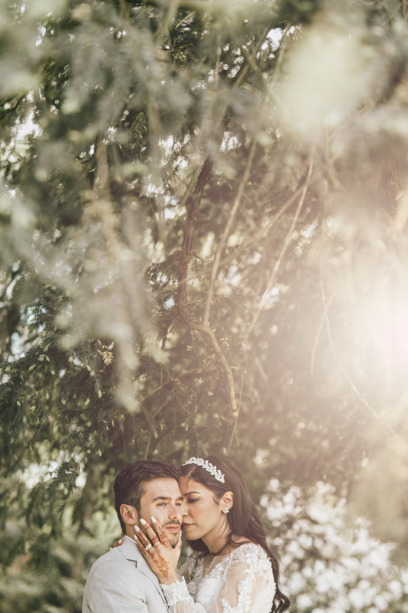
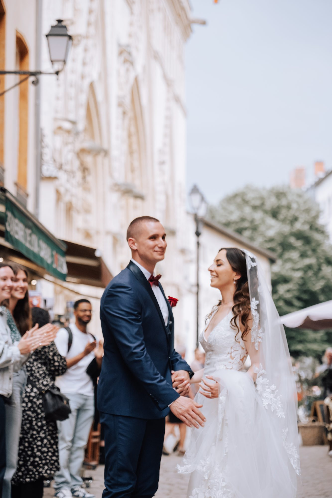
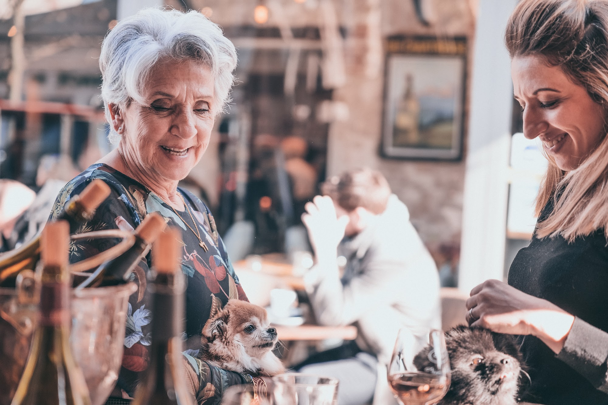
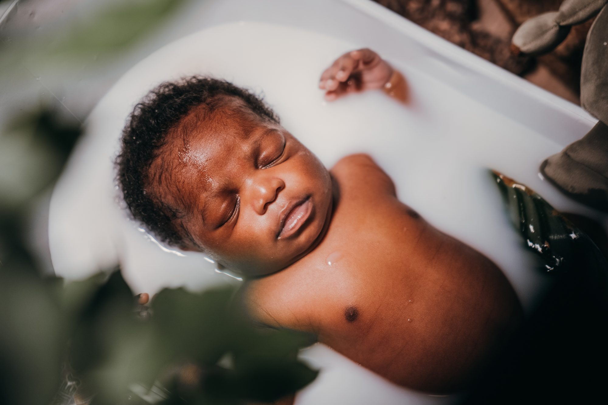
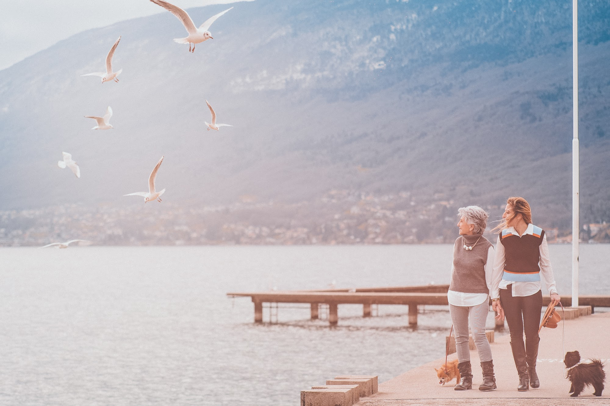
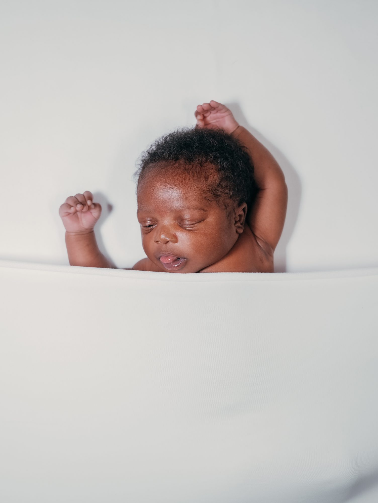
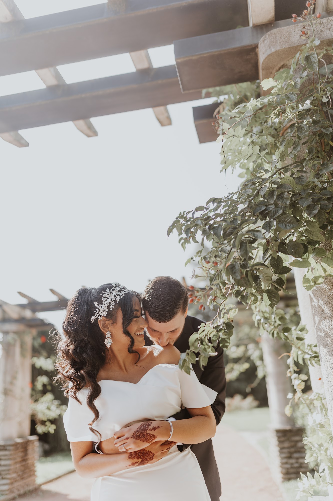
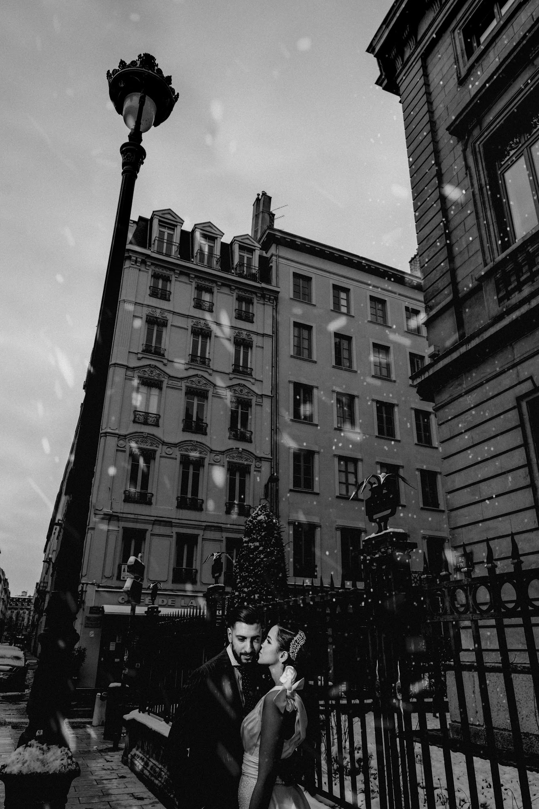
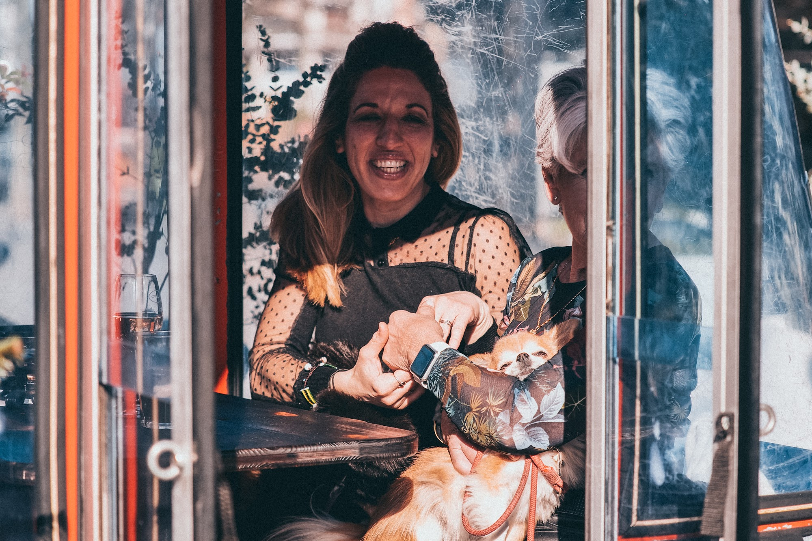

Séance photo couple, famille et naissance à Lyon
Une séance photo, c’est une heure pour vous, sans pression, dans un lieu qui vous ressemble. Couple, famille, grossesse ou arrivée d’un bébé : je vous guide juste ce qu’il faut pour des images naturelles, que vous aurez envie d’accrocher au mur.

Séance couple ou séance d’engagement

Avant un mariage, pour un anniversaire ou simplement pour vous, la séance couple est un moment complice. Je vous propose de marcher, de parler, de rire : les plus belles images arrivent quand on oublie l’appareil.
Avant un mariage, c’est aussi l’occasion de faire connaissance et de vous sentir à l’aise devant l’objectif le jour J.
Famille : garder les liens qui comptent
Parents et enfants, grands-parents, une maman et sa fille : une séance famille capture une relation, pas seulement des visages. Au bord d’un lac, dans un parc ou chez vous, je laisse les gestes et les regards venir naturellement.

Grossesse et naissance
La grossesse se photographie idéalement entre le septième et le huitième mois, en extérieur ou à domicile. Pour un nouveau-né, les premières semaines sont le meilleur moment : bébé dort beaucoup, et la séance se fait tout en douceur, à son rythme.
Lumière naturelle, décors simples, gestes tendres : des images douces pour garder ces premiers instants.

Où faire votre séance à Lyon
Lyon offre des décors très variés : les ruelles du Vieux Lyon, les quais de Saône, le parc de la Tête d’Or, les hauteurs de Fourvière. On peut aussi partir au bord d’un lac, en forêt ou rester chez vous, pour une séance plus intime. Nous choisissons ensemble le lieu et l’heure, en fonction de la lumière et de vos envies.






Comment ça se passe
- Vous m’écrivez avec le type de séance et vos disponibilités.
- Nous choisissons ensemble le lieu, l’heure et les tenues.
- La séance dure environ une heure, sans pression.
- Vous recevez vos photos retouchées dans une galerie privée en ligne.
Questions fréquentes
Combien de temps dure une séance photo ?
Environ une heure, le temps de vous mettre à l’aise et de varier les ambiances. Pour un nouveau-né, nous prenons le temps qu’il faut, au rythme du bébé.
Que porter pour une séance photo ?
Des vêtements dans lesquels vous vous sentez bien, aux couleurs douces et assorties entre vous. Évitez les gros logos et les motifs trop chargés. Nous en parlons ensemble avant la séance.
Que se passe-t-il en cas de pluie ?
Nous décalons la séance à une autre date, ou nous choisissons un lieu à l’abri. La pluie peut aussi donner de très belles images, si vous êtes partants.
Quand recevons-nous les photos ?
Dans une galerie privée en ligne, après le tri et la retouche. Le délai est précisé lors de la réservation.
Envie d’une séance photo ? Écrivez-moi pour choisir une date.